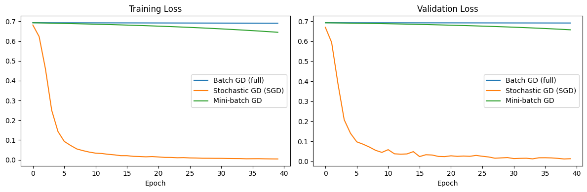
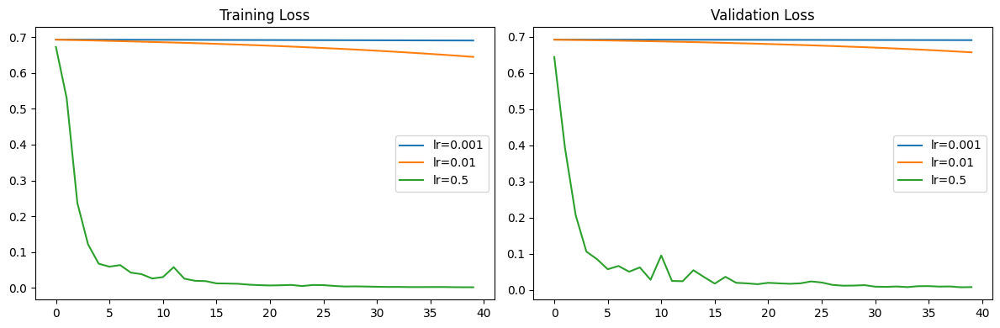

Building the forward pass, parameter counting, and gradient descent by hand — to understand what's actually happening before treating deep learning libraries as a black box.
Every layer of a neural network reduces to the same base computation: a weighted sum of inputs plus a bias, z = W·x + b, passed through an activation function. Working through this by hand for both sigmoid and ReLU activations on the same input made the difference between them concrete rather than abstract.
The same computation extends to a full network by stacking matrix multiplications layer by layer, with careful attention to matrix shapes — a transposed matrix is one of the most common silent bugs in this kind of code. Counting parameters by hand for a small 10→5→3→1 network and then verifying the count in PyTorch reinforced how quickly parameter count grows: it scales roughly quadratically with layer width, since every neuron in one layer connects to every neuron in the next.
With the architecture in place, the next question was how the network actually learns. I trained the same model under three gradient descent variants — full-batch, stochastic (batch size 1), and mini-batch — on a synthetic binary classification task, to see how batch size affects the shape of the loss curve.

Then, holding batch size constant, I swept three learning rates to see the classic trade-off between speed and stability play out directly.

What the sweep showed: batch gradient descent produced the smoothest curve since it averages the gradient over every sample; stochastic gradient descent was the noisiest, since each update reacts to a single data point. On the learning rate side, too high a rate caused the loss to oscillate or diverge instead of settling, while too low a rate converged reliably but slowly — the same gradient direction, just a mismatched step size.
It's easy to call model.fit() without knowing what's underneath it. Rebuilding the forward pass, the parameter count, and the optimization loop from scratch turns "the model isn't converging" from a mystery into a diagnosable problem — is it the activation choice, the learning rate, the batch size, or the architecture itself? That's the difference between using a library and actually understanding the tool.